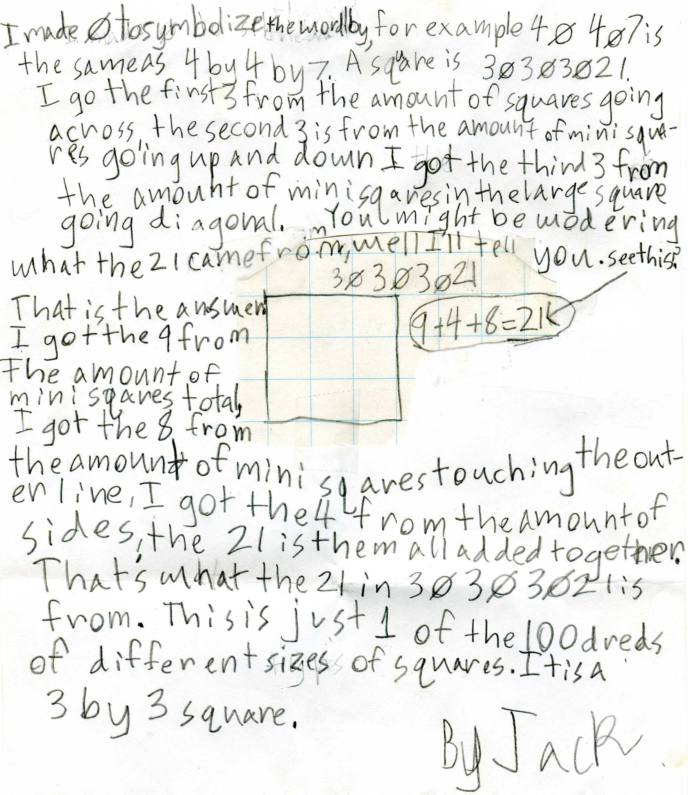

Jack invents new ways to look at mathematics
In 2nd grade he did these things:
He made a list of 3-digit numbers, then changed the position of the numbers in the hundreds place and found that the sum of the 3 numbers remained the same.
Then he invented a way to find the mid-point of a segment, whose end points were 2D and 4G. He found the mid-point to be 3L. Don thought that this was another way to look at what is normally taught in geometry classes!
In 3rd grade he just did this, about a square:

Great work, Jack!!!